appendixB POAP
#Appendix B: Day 0 automation using POAP
In this section, you will deploy Power On Auto Provisioning (POAP) for leaf4 in DCNM.
| mgmt | Loopback0 | Loopback1 | Eth1/1 | Eth½ |
|---|---|---|---|---|
| 198.18.4.104 | 198.168.0.11 | 198.168.0.111 | 10.0.128.2 | 10.0.128.18 |
###Step 1: - Open Google Chrome and login Cisco DCNM (https://198.18.134.200) using username/password admin/C1sco12345

###Step 2: - On the left side menu, click Configuration > Deploy > POAP
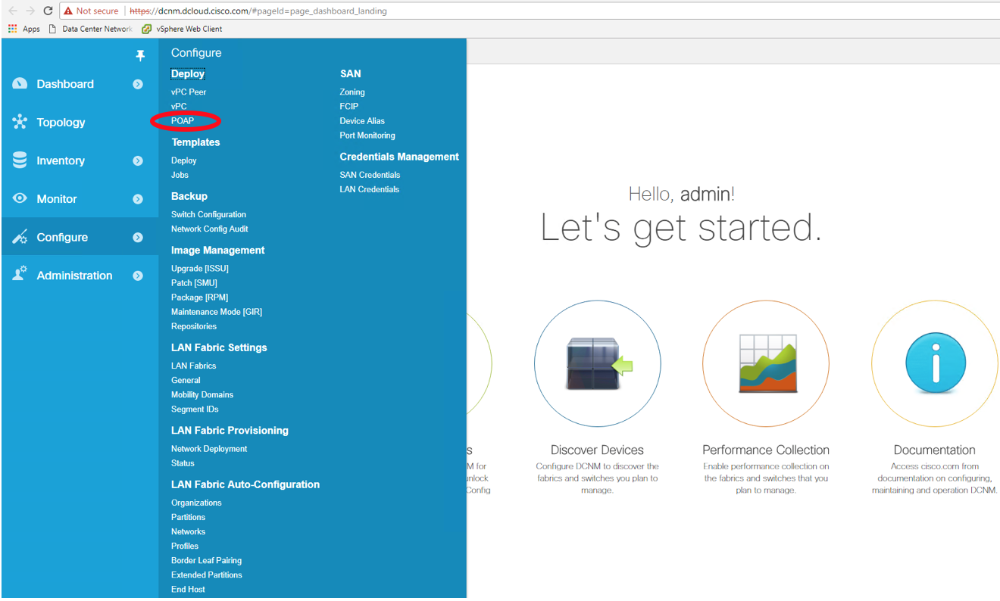
###Step 3: - Click DHCP Scopes on POAP page
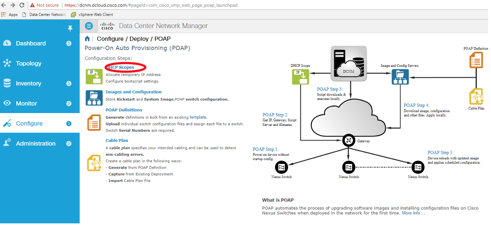
###Step 4: - Click plus sign to add new DHCP scope, name it ‘vxlan_evpn_leaf’ add DCHP range ‘198.18.4.100-198.18.4.104’ as IP pool
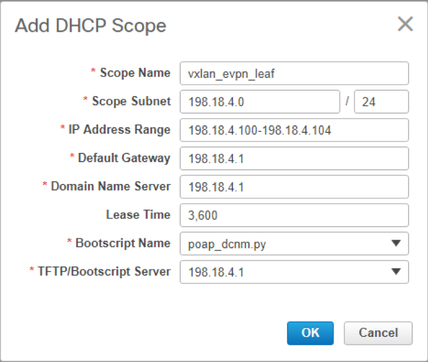
###Step 5: - click OK to close the DHCP scope window
###Step 6: - Click left side menu Configure > Deploy > POAP
###Step 7: - Click Images and Configuration on the POAP page
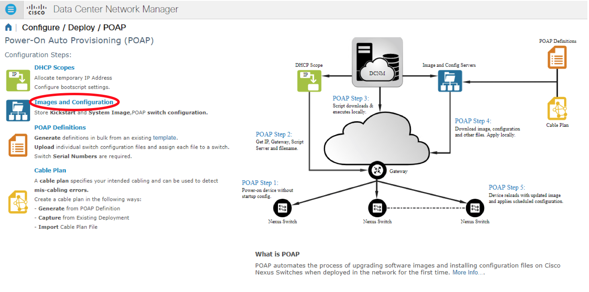
###Step 8: - Check the Default_SCP_Repository, click File Browser to verify image nxos.7.0.3.I7.0.154.bin file is in the repository.
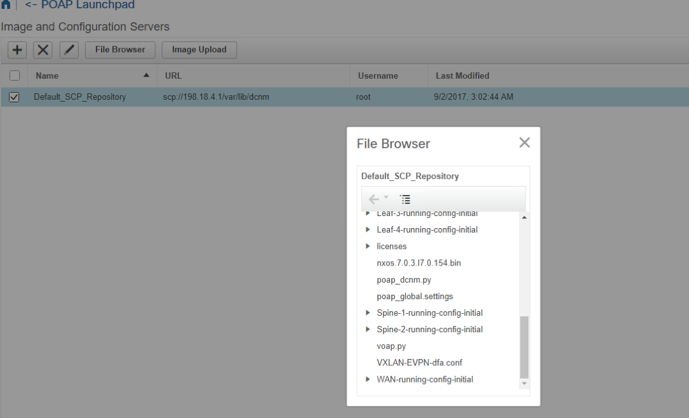
###Step 9: - Click left side menu Configure > Deploy > POAP
###Step 10: - Client ‘template’ under POAP Definitions
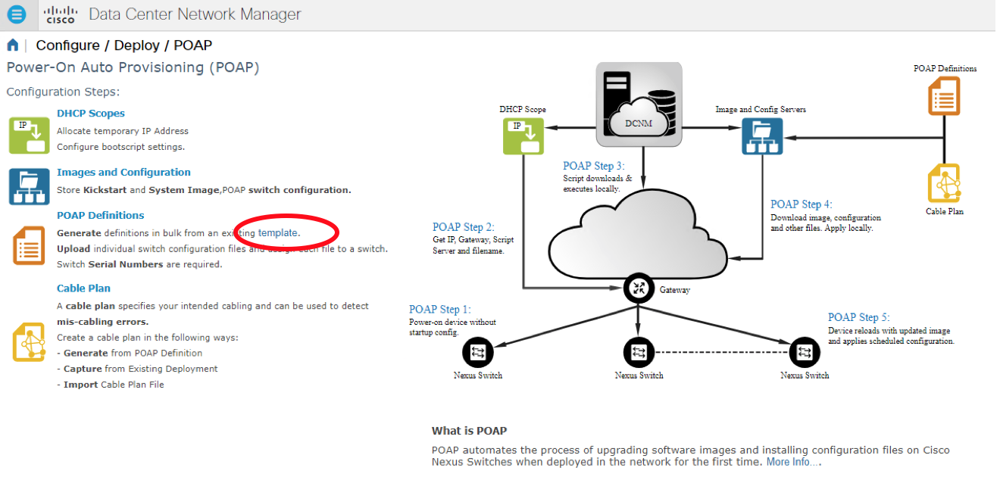
###Step 11: - Click import Template from the Templates page
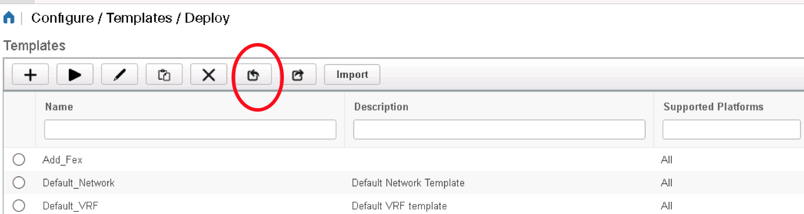
###Step 12: - Locate simple_template.template file on desktop, and open the template.
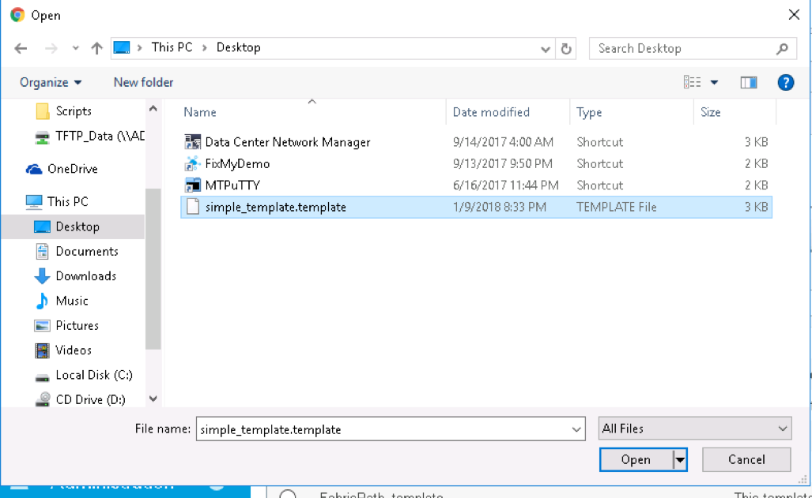
###Step 13: - Save the template
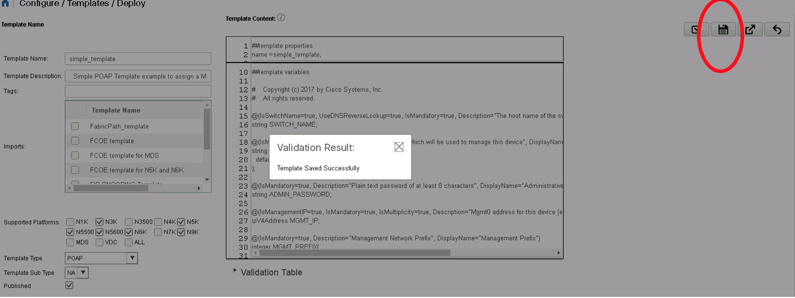
###Step 14: - Click left side menu Configure > Deploy > POAP
###Step 15: - Click plus sign to add new POAP Definitions
###Step 16: - Check Generate Definition and click next
###Step 17:
- Switch to MTPuTTY open connection to switch leaf-4, type in command ‘show module’ and write down the Serial-Num
Note: The Serial-Num from your output might be different
-
Put the Serial Number (9VSCMHEMJ69) for switch leaf-4 in ‘Switches’ field. Fill in other information on the page as following.
-
Use drop down list to fill in rest information
- Switch Type: N9K
- Image Server: Default_SCP_Repository
- Switch Username: admin
- Switch Password: C1sco12345
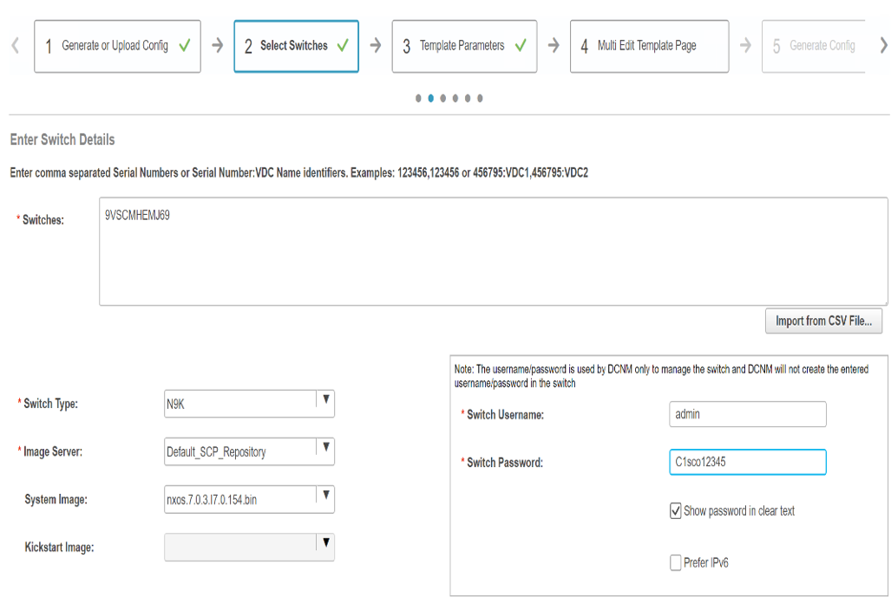
###Step 18:
- Click Next and select simple_template from template drop down list, and fill in other information as below
- Switch Name : leaf-4
- Administrative Username: Admin
- Administrative Password: c1sco12345
- Management IP: 198.18.4.104
- Management Prefix: 24
- Default Gateway: 198.18.4.1
- Console timeout: 0
- Console Speed : 9600
###Step 19:
-
Select switch leaf-4 with Serial Number ‘91AQACU3U3UH9’
-
Click Next
###Step 20: - Click Preview CLI as shown below - Then click Finish 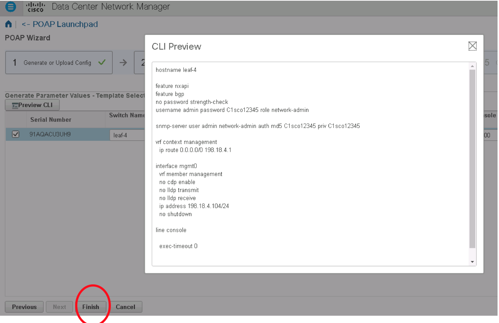
###Step 21: - select switch leaf-4, Click Write Erase and Reload to delte leaf-4 configuration and kick off the POAP process
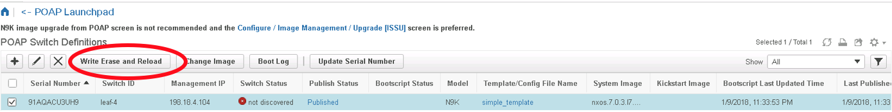
- Click Continue on the popup warning
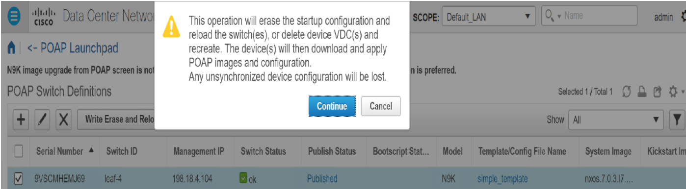
###Step 22: - Connect to Leaf-4 console port from MTPuTTY, watch the POAP process
If the POAP scripts fail, verify the S/N in console. If the S/N doesn’t match what you configured in POAP definition, you need to configure new POAP definition matches the S/N.
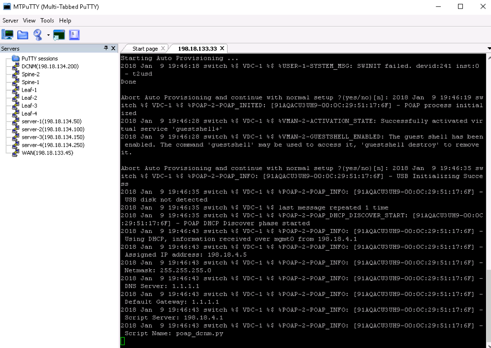
###Step 23: - Login leaf-4 to verify running configuration after POAP is completed
POAP will take 20 mins to bootup; up to this point, you have completed all tasks.
#Congratulation! You have completed the whole lab.